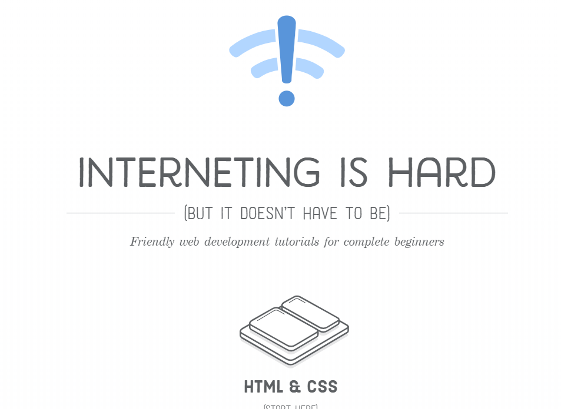
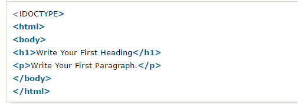

SMART methode
- Specifiek: De cursus HTML&CSS van the internet is hard maken.
- Meetbaar: Ik kan een plo webpagina maken.
- Acceptabel: Als bedrijfskunde is het belangrijk om verstand te hebben van hoe websites werken.
- Realistisch: Ik denk dat de cursus helpt om een beter beeld van websites te krijgen.
- Tijdgebonden: Dit leerdoel is voor Op4

Bewijslast
het bewijs dat ik dit leerdoel heb gedaan is vertaald in deze website.
Een voorbeeld is dat de afbeeldingen op deze pagina relatief gepositioneerd staan in flexbox, een moderne techniek die in dit geval ervoor zorgt dat op een groter scherm de afbeeldingen ook op
de juiste plek staan.
Een ander voorbeeld is dat als je de browser kleiner maakt dat het menu automatisch een andere opmaak krijgt. Dit heet responsive design
en zit deels in deze website verwerkt. Daarom als je de homepagina kleiner maakt verdwijnt de foto.
Deze tekst veranderd van kleur als je erover heen gaat met de cursor
STARR-Reflectie
- Situatie: Een leerdoel uitwerken voor PLO.
- Taak: De cursus HTML&CSS van The internet is hard uitwerken.
- Actie: De cursus uitgewerkt en de bijbehorende pagina’s gemaakt.
- Resultaat: Een basiskennis van HTML&CSS waardoor ik een beetje verstand van webdesign heb. Met deze kennis heb ik al mailsignatures op mijn stageplek gemaakt.
- Reflectie: Ik vond het nuttig om hier tijd in de steken, webdesign is een belangrijke vaardigheid
